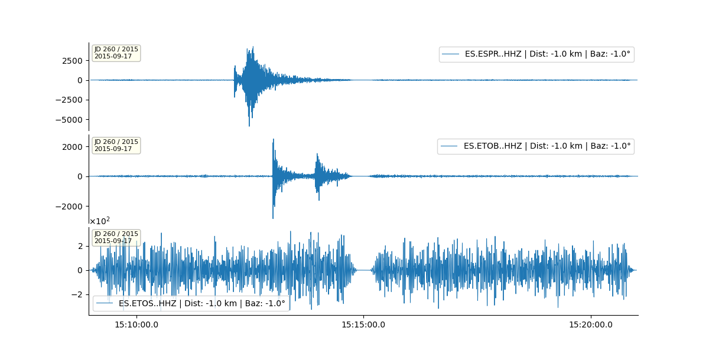
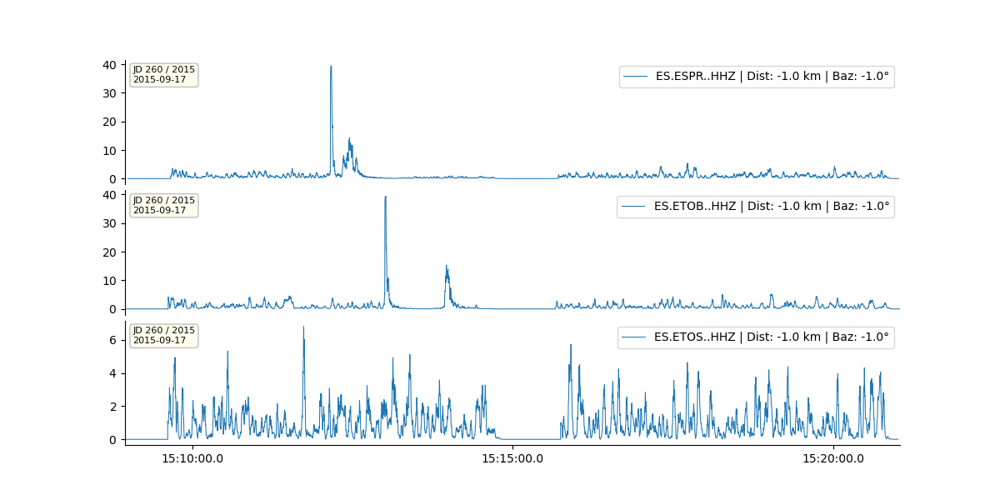
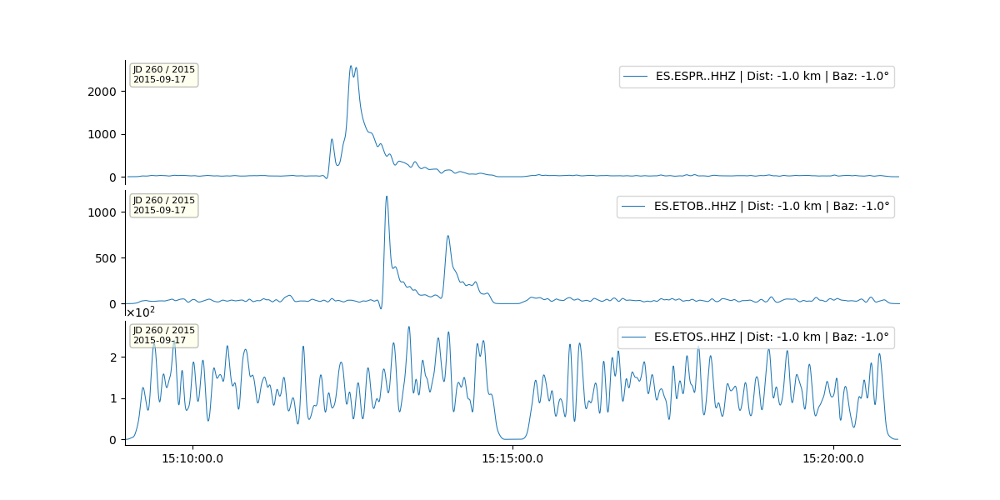
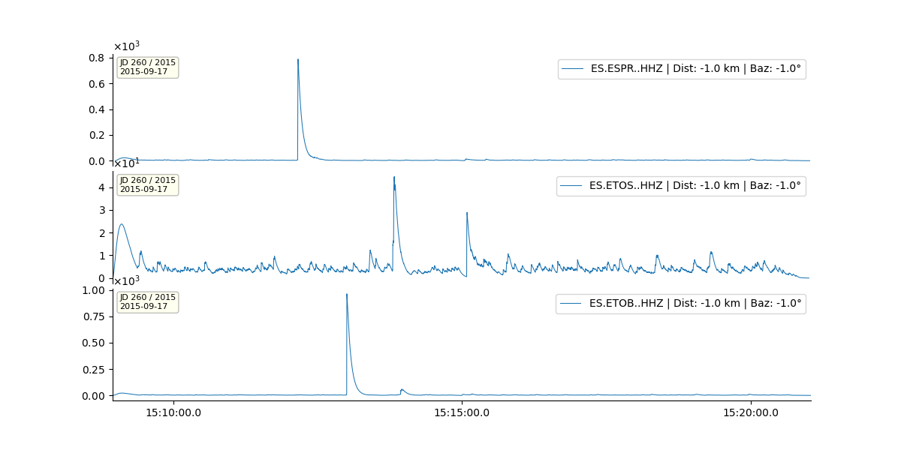
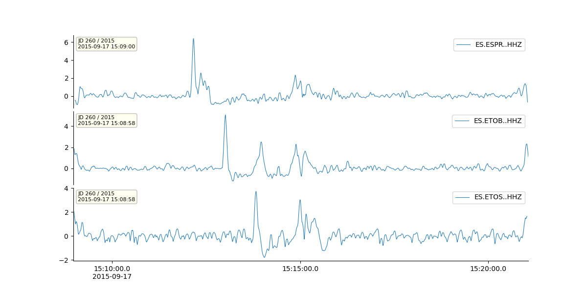

Characteristic Functions in SurfQuake
A characteristic function (CF) transforms a seismogram into a curve that rises when a seismic arrival starts. Raw waveforms are difficult to scan automatically: the amplitude of the background noise changes, arrivals can be emergent, and the onset is hidden in the oscillation of the wave. A good CF is flat and low in the noise, and jumps at the onset, so a simple threshold can detect it. CFs are the core of automatic event detection (coincidence triggers), phase picking and array processing.
Each CF responds to a different property of the signal:
| CF | Reacts to | Strengths | Weaknesses |
|---|---|---|---|
| SNR (STA/LTA) | An increase of energy | Simple, fast, the classic detector | Late or missed for emergent signals; sensitive to noise bursts |
| Envelope | Amplitude | Simple, robust, smooth | Only amplitude: misses arrivals that change the frequency content but not the amplitude |
| Spectral entropy | Concentration of energy in few frequencies | Detects narrowband signals (tremor, LP events, later phases in a coda) | Low time resolution (window based) |
| Kurtosis | Impulsiveness (non-Gaussian samples) | Sharp, precise onsets in noisy data | Does not help emergent signals; sensitive to spikes |
| CWT | Energy, spectral contrast, entropy, centroid or kurtosis in many frequency bands at once | Combines several CFs from one wavelet transform; robust in low SNR | More parameters to choose |
All CFs are stream methods: n traces in, n CF traces out, with the same ids and the same time axis as the input. They replace the waveforms, so they are usually the last step of the workflow. Plot them, write them (-o), or use them in your own scripts.
Pre-processing
Every CF works better on clean data. Merge the segments, remove the mean, taper and filter in the band where your events have energy before computing the CF. The template surfquake make_config -c ch_functions contains this pre-processing and a commented block for every CF.
Analysis:
process_1:
name: 'concat'
process_2:
name: 'rmean'
method: 'linear'
process_3:
name: 'taper'
method: 'cosine'
max_percentage: 0.05
process_4:
name: 'filter'
type: 'bandpass'
fmin: 0.5
fmax: 8.0
corners: 4
zerophase: True
process_5:
name: 'snr' # <- the characteristic function: replace this block
method: 'classic'
sign_win: 1
noise_win: 40
In the examples below only the CF step is shown: add it after the pre-processing steps, with the next free number (process_5 here). Each process_N key must be unique: a repeated key silently replaces the earlier step.
1. Signal-to-Noise Ratio (STA/LTA)
The STA/LTA ratio compares the average energy in a short window (Short-Term Average, the "signal") with the average energy in a long window (Long-Term Average, the "noise"). In the noise both averages are similar and the ratio stays near 1; when an arrival enters the short window, the STA grows much faster than the LTA and the ratio jumps. It is the classic detector of seismology (Allen, 1978).
For a trace \(x_n\) with STA and LTA windows of \(N_s\) and \(N_l\) samples:
The recursive version updates both averages with exponential decay, \(\mathrm{STA}_n = \tfrac{1}{N_s}x_n^2 + \left(1-\tfrac{1}{N_s}\right)\mathrm{STA}_{n-1}\) (and likewise the LTA with \(N_l\)).
Methods
method |
Description |
|---|---|
classic |
Classic STA/LTA: both averages over sliding windows that end at the current sample. |
recursive |
Recursive STA/LTA: the averages are updated with exponential decay. Faster and smoother. |
z_detect |
Z-detector: the STA expressed in standard deviations from its mean over the trace. Uses only sign_win. |
Parameters
| Parameter | Description |
|---|---|
sign_win |
STA window, in seconds. About 1–2 periods of the dominant frequency of the arrivals: short windows react faster but are noisier. |
noise_win |
LTA window, in seconds. Typically 10–40 times sign_win. Ignored by z_detect. |
Config Example
References
- Allen, Rex V. "Automatic earthquake recognition and timing from single traces." Bulletin of the Seismological Society of America 68.5 (1978): 1521-1532.
- Withers, Mitchell, et al. "A comparison of select trigger algorithms for automated global seismic phase and event detection." Bulletin of the Seismological Society of America 88.1 (1998): 95-106.
2. Envelope
The envelope is the instantaneous amplitude of the signal. It is computed from the analytic signal \(x(t) + i\,\mathcal{H}[x(t)]\), where \(\mathcal{H}\) is the Hilbert transform: the envelope is its modulus,
It follows the amplitude of the wave without its oscillation, so an arrival appears as a smooth bump instead of a wave train. It is simple and robust, but it only reacts to amplitude.
Methods
method |
Description |
|---|---|
FULL |
Raw envelope. |
SMOOTH |
Envelope followed by a low-pass filter at corner_freq. Recommended for triggering and for long records. |
Parameters
| Parameter | Description |
|---|---|
method |
FULL or SMOOTH. |
corner_freq |
SMOOTH only: low-pass corner in Hz, written as a float (0.15, not 1). Lower values give smoother envelopes and less time resolution. |
Config Example
Reference
- Kanasewich, Ernest R. Time Sequence Analysis in Geophysics. 3rd ed., University of Alberta Press, 1981.
3. Spectral Entropy
The spectral entropy measures how spread the energy is over frequencies. In each sliding window, the power spectrum is normalised so it sums to 1, like a probability distribution \(p_k\), and its Shannon entropy is computed and divided by its maximum value:
- High entropy (close to 1): the energy is spread over all frequencies, as in broadband noise.
- Low entropy: the energy is concentrated in a few frequencies, as in a seismic arrival, tremor or a long-period event.
So, unlike the other CFs, the entropy drops at an arrival. It is useful for narrowband signals and for arrivals that change the frequency content more than the amplitude.
Parameters
| Parameter | Description |
|---|---|
win |
Window length in seconds. It must contain several periods of the lowest frequency of interest. Longer windows give a more stable entropy but less time resolution. |
overlap |
Overlap between windows, in percent (default 50). |
Config Example
Tip
For a CF that rises at arrivals and is whitened against the background noise, use cwt_cf with cf_type: 'entropy' (section 5).
References
- Shannon, Claude E. "A mathematical theory of communication." The Bell System Technical Journal 27.3 (1948): 379-423.
- da Silva, Sérgio Luiz E. F., and Gilberto Corso. "Microseismic event detection in noisy environments with instantaneous spectral Shannon entropy." Physical Review E 106.1 (2022): 014133.
4. Kurtosis
The kurtosis is the fourth-order statistical moment of the signal, normalised by the variance. Gaussian noise has a fixed kurtosis, while an impulsive arrival produces a few samples much larger than the rest and the kurtosis rises sharply. It is therefore very sensitive to the onset of impulsive arrivals, even in noisy data, and gives precise onset times.
In a window of samples with mean \(\mu\) and standard deviation \(\sigma\):
which is 3 for Gaussian noise and grows when a few samples are much larger than the rest.
SurfQuake follows a multi-band approach: the trace is filtered in 20 logarithmically spaced frequency bands between fmin and fmax, a recursive kurtosis CF is computed in each band, and the bands are combined. An arrival that is impulsive in any band raises the CF.
Parameters
| Parameter | Description |
|---|---|
CF_decay_win |
Memory of the recursive estimator, in seconds. Shorter windows (e.g. 2 s) give sharper responses but noisier CFs; longer windows give smoother and slower CFs. |
fmin, fmax |
Frequency band of the filter bank, in Hz (fmax is capped at 0.98 × Nyquist). |
Config Example
Note
Kurtosis does not help emergent signals, and it reacts to spikes: remove them first (remove_spikes). To combine kurtosis with other CFs computed from the same wavelet transform, use cwt_cf with cf_type: 'kurtosis' (section 5).
Reference
- Poiata, Natalia, et al. "Multi-band array detection and location of seismic sources recorded by dense seismic networks." Geophysical Journal International 205.3 (2016): 1548-1573.
5. CWT Characteristic Functions
The Continuous Wavelet Transform decomposes each trace into many narrow frequency bands, with a time resolution adapted to each frequency (see Time-Frequency Analysis). The result, the scalogram, shows how the energy of the trace is distributed in time and frequency. cwt_cf builds characteristic functions from the scalogram: since every band is analysed at the same time, the CF reacts to arrivals that are clear only in some frequencies, which makes it robust in low signal-to-noise conditions. The original CWT characteristic function was designed to turn the incoherent traces of a large, sparse array into coherent impulse functions suitable for beamforming (Cabieces et al., 2020).
SurfQuake computes the bank of wavelet atoms once and convolves every trace with it, so it is efficient for many traces and long records. From the same scalogram it can compute several CFs in a single pass and combine them.
Mathematical description
Scalogram. Each trace \(x(t)\) is convolved with a bank of \(N_f\) wavelet atoms \(\psi_j\) centred at the frequencies \(f_j\) (logarithmically spaced between fmin and fmax, voices_per_octave per octave). The complex coefficients and the power scalogram are
power. The mean over frequencies of the time derivative of the log power (Cabieces et al., 2020):
It is large when the power rises suddenly in many frequencies at the same time, which is what an onset does.
Whitening and windows. The other spectral CFs compare a signal window after \(t\) with a background window before \(t\). First, each frequency is divided by its own background level, so all frequencies weigh the same (whitening):
Then, with \(T_a\) = win_after, \(T_b\) = win_before and \(g\) = gap, the mean power in the two windows is
and the log ratio of the window amplitudes is
power_win. The mean spectral ratio, a multi-band STA/LTA in the log domain (Gibbons et al., 2008):
power_mod. The ratio weighted by the energy above the background, so only frequencies with real signal energy contribute; the signed square root brings the result back to log-amplitude units:
centroid. The energy centroid in log-frequency (octaves) of each window, and its shift:
Positive when the energy moves to higher frequencies.
entropy. The normalised spectral entropy of each window, and its drop:
Positive when the energy concentrates in fewer frequencies after \(t\) than before. With direction: 'down' the sign of the centroid and entropy CFs is reversed, and with 'both' their absolute value is taken.
kurtosis. The real part of each row of the scalogram, \(x_j(t) = \operatorname{Re} W(f_j, t)\), is a band-passed version of the trace. In a trailing window of length \(T_k\) = win_kurt, the excess kurtosis of each band is averaged over the bands and compressed:
where \(m_2\) and \(m_4\) are the second and fourth central moments. It is about 0 for Gaussian noise and positive when the signal becomes impulsive.
Finally, every CF is smoothed with a low-pass filter at lowpass_freq.
CF types
cf_type |
Idea | Reacts to |
|---|---|---|
power |
Mean over frequencies of the time derivative of the log power. The original CF (Cabieces et al., 2020). | A jump in energy: impulsive onsets, typically P. |
power_win |
Windowed spectral ratio: mean over frequencies of \(\log(A_{after}/A_{before})\), a multi-band STA/LTA in the log domain (Gibbons et al., 2008). | Energy contrast. |
power_mod |
As power_win, weighted by the energy above the background (Gibbons et al., 2008). |
High contrast and high energy: strong, impulsive arrivals. |
entropy |
Drop of the spectral entropy of the whitened scalogram. | Energy concentrating in a narrow band, even if the total energy barely changes: later phases inside a coda (typically S), narrowband signals (tremor, LP events). |
centroid |
Shift of the energy centroid in log-frequency (octaves). | A signal spectrally different from the noise, e.g. a local event above the microseism band. |
kurtosis |
Multi-band excess kurtosis of the band-passed signals in a trailing window. | Impulsive signals: weak sharp onsets, precise timing. Not emergent signals; sensitive to spikes. |
Which one?
In our tests power_mod found the P waves (broadband, impulsive) and entropy found the S waves inside the P coda, which the energy CFs missed; kurtosis added weak impulsive onsets and sharper picks. Combining them with combine: 'stouffer' gave the best detections: cf_type: 'power_mod,entropy,kurtosis'.
Required parameters
| Parameter | Description |
|---|---|
fmin, fmax |
Analysis band in Hz. Keep it inside the band of the pre-processing filter. |
cycles |
Number of cycles of the wavelet. Larger = better frequency resolution, worse time resolution. 6 is recommended for cm. |
voices_per_octave |
Frequency sampling: 8 = coarse, 16 = standard, 32 = fine. |
wavelet_type |
cm = Complex Morlet (recommended), mh = Mexican Hat (real wavelet, power CF only), pa = Paul. |
Optional parameters
| Parameter | Default | Description |
|---|---|---|
cf_type |
power |
One type, or several separated by commas. With several types they are combined into one CF per trace. |
lowpass_freq |
0.15 | Low-pass corner applied to the CF (Hz). Lower = smoother CF, less time resolution. The window-based CFs are already smoothed by their windows: use 0.5–1.0 for them. |
win_before |
10.0 | power_win, power_mod, entropy, centroid: background window before each sample (s). |
win_after |
2.0 | Same CFs: signal window after each sample (s). Use at least ~2 periods of fmin (fmin = 0.5 Hz → ≥ 4 s); win_before ~5–10 × win_after. |
gap |
0.5 | The background window ends gap s before each sample, so the start of an emergent arrival does not enter the background (Gibbons et al., 2008). 0 = no gap. |
direction |
up |
entropy and centroid: up = increase, down = opposite sign, both = absolute value. |
win_kurt |
3.0 | kurtosis: trailing window (s), 1–5 s, at least a few periods of fmin. Shorter = sharper and noisier. |
Combining several CFs
When cf_type has several types, each CF is standardised and they are merged into one CF per trace:
| Parameter | Default | Description |
|---|---|---|
combine |
max |
max: fires if any CF fires (more detections, more false alarms). mean: fires only if the CFs agree (conservative). stouffer: sum divided by the square root of the sum of their correlations: rewards agreement and does not count correlated CFs twice (recommended). gmean: between mean and max, controlled by p. |
p |
3.0 | gmean power: 1 = mean, large = max. |
tolerance |
0.0 | Running maximum of each CF over ± tolerance s before combining, so peaks slightly offset in time add up. 0.3–0.5 s recommended; the trigger can move up to this amount earlier. |
norm |
mad |
Standardisation of each CF. mad: \((x - \text{median}) / (1.4826 \cdot \text{MAD})\). tail: the tail_quantile is mapped to its Gaussian value (0.99 → 2.33 σ), so the same threshold gives a similar false-alarm rate for every CF (recommended). |
tail_quantile |
0.99 | Quantile used by norm: 'tail'. It must be above the fraction of time occupied by events: 0.95 for ~1 h windows containing an event, 0.99–0.999 for full days. |
final_norm |
False |
Standardise the combined CF again, so thresholds mean the same for every combine rule. |
In formulas, each CF \(x_i(t)\) is first standardised:
where \(Q_q\) is the tail_quantile \(q\) of the CF and \(\Phi^{-1}\) the inverse of the standard normal distribution. Then, for \(M\) CFs:
combine |
Combined CF |
|---|---|
max |
\(\max_i z_i(t)\) |
mean |
\(\frac{1}{M}\sum_i z_i(t)\) |
stouffer |
\(\dfrac{\sum_i z_i(t)}{\sqrt{\sum_{i,k} R_{ik}}}\), with \(R\) the correlation matrix of the \(z_i\). For independent CFs the denominator is \(\sqrt{M}\) (Stouffer's method); for correlated CFs it is larger, so they are not counted twice. |
gmean |
\(\left(\frac{1}{M}\sum_i \max(z_i(t), 0)^p\right)^{1/p}\) |
Output units: a single cf_type gives the raw CF (not normalised). Several types give a CF in σ units, so thresholds like 4–5 σ apply. Calibrate them on a quiet day: with combine: 'max' the background is higher than for a single CF.
Config Example
process_5:
name: 'cwt_cf'
cycles: 6
fmin: 0.5
fmax: 8.0
voices_per_octave: 16
wavelet_type: 'cm'
cf_type: 'power_mod,entropy,kurtosis'
lowpass_freq: 0.5
win_before: 20.0
win_after: 4.0
gap: 0.5
direction: 'up'
win_kurt: 4.0
combine: 'stouffer'
tolerance: 0.5
norm: 'tail'
tail_quantile: 0.99
final_norm: True
A single, simple CF:
process_5:
name: 'cwt_cf'
cycles: 6
fmin: 0.5
fmax: 8.0
voices_per_octave: 16
wavelet_type: 'cm'
cf_type: 'power'
References
- Cabieces, Roberto, et al. "Slowness vector estimation over large-aperture sparse arrays with the Continuous Wavelet Transform (CWT): application to Ocean Bottom Seismometers." Geophysical Journal International 223.3 (2020): 1919-1934.
- Gibbons, Steven J., Frode Ringdal, and Tormod Kværna. "Detection and characterization of seismic phases using continuous spectral estimation on incoherent and partially coherent arrays." Geophysical Journal International 172.1 (2008): 405-421.
Applications
| CF | Typical use |
|---|---|
| SNR | Event detection, coincidence triggers, first-arrival picking. |
| Envelope | Energy bursts, surface waves, coda analysis, tremor. |
| Spectral Entropy | Narrowband signals, tremor and LP events, discrimination of signal vs noise. |
| Kurtosis | Precise onsets of impulsive phases in noisy signals. |
| CWT | Robust detection in low SNR, P and S in the same CF, array processing with sparse arrays. |
The CF traces can be plotted, written to disk (-o), used by the coincidence trigger, or analysed in your own scripts.
Output
Each CF replaces the trace data with the calculated function, keeping the trace ids and the time axis. In the following example, all CFs were computed on the same filtered seismograms.
- Filtered seismograms: bandpass 0.5–8.0 Hz.

- SNR: classic STA/LTA, 1 s / 40 s.

- Envelope: smoothed with a 0.15 Hz low-pass filter.

- Kurtosis: 0.5–8.0 Hz,
CF_decay_win4.0 s.

- CWT:
power_mod,entropyandkurtosisbetween 0.5 and 8.0 Hz, combined withstouffer.
